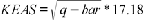
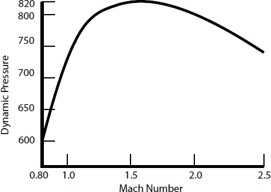
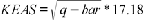

Takeoff
The maximum airspeed for the vehicle is 492 knots equivalent airspeed (KEAS) where  (see figure below).
There is no official minimum airspeed
for ascent.

The maximum airspeed for the vehicle is 492 knots equivalent airspeed (KEAS) where  (see figure below).